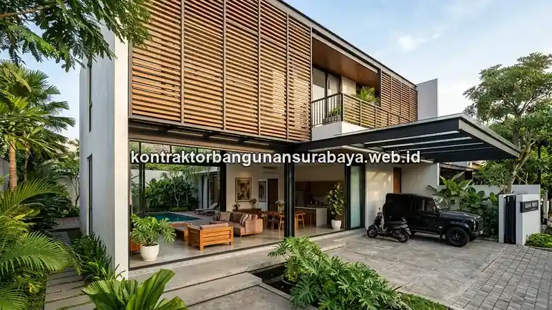

1. Bagaimana Proses Desain Rumah Minimalis Hingga Finishing?
Proses desain rumah minimalis dimulai dari penataan denah yang efisien, pemilihan fasad dengan garis-garis bersih dan proporsi sederhana, hingga penerapan interior dan finishing yang selaras dengan konsep minimalis tersebut. kontraktorbangunansurabaya.web.id membantu mewujudkan rumah minimalis yang tidak hanya estetis, tetapi juga fungsional sesuai kebutuhan sehari-hari penghuninya.
Bagi masyarakat Surabaya yang memiliki lahan terbatas di kawasan perkotaan dan sedang merencanakan bangun rumah baru, desain rumah minimalis modern menjadi pilihan yang tepat. Konsep ini tidak hanya tentang tampilan yang bersih dan sederhana, tetapi juga tentang bagaimana setiap elemen dirancang untuk memaksimalkan fungsi ruang yang tersedia.
Mengapa Rumah Minimalis Cocok untuk Surabaya?
Dengan lahan perkotaan yang semakin terbatas dan harga properti yang terus meningkat, rumah minimalis modern menawarkan solusi hunian yang efisien, nyaman, dan tetap estetis untuk keluarga urban di Surabaya.
2. Tata Letak Ruang Tamu, Dapur, dan Kamar Tidur yang Efisien
Rumah minimalis yang fungsional biasanya menempatkan ruang tamu dan ruang keluarga secara terhubung (open plan) untuk memaksimalkan kesan luas pada lahan terbatas, sementara area servis seperti dapur dan kamar mandi ditempatkan pada zona yang mudah diakses namun tetap memiliki privasi yang cukup.
Zona Ruang
- Open Plan: Ruang tamu & keluarga terhubung
- Area Servis: Dapur & kamar mandi mudah diakses
- Privasi: Kamar tidur di zona tenang
- Multifungsi: Ruang keluarga bisa jadi ruang kerja
Detail Efisiensi Ruang
- Furnitur Built-in: Wardrobe tanam menyatu dinding
- Sliding Door: Menghemat ruang ayun pintu
- Ruang Multifungsi: Setiap sudut termanfaatkan
- Tanpa Furnitur Lepas: Tampilan rapi & lega
Kamar tidur pada desain minimalis umumnya dirancang dengan furnitur built-in yang menyatu dengan dinding, seperti wardrobe tanam, untuk menghemat ruang gerak sekaligus menjaga tampilan kamar tetap rapi tanpa banyak furnitur lepas yang memakan tempat.
Untuk lahan yang terbatas, penerapan konsep ruang multifungsi, misalnya ruang keluarga yang juga berfungsi sebagai ruang kerja atau ruang belajar, menjadi solusi praktis agar setiap sudut rumah tetap termanfaatkan secara optimal tanpa perlu menambah luas bangunan.
Detail Kecil Berdampak Besar
Pemilihan jenis pintu dan jendela, misalnya sliding door untuk menghemat ruang ayun pintu, juga menjadi detail kecil yang berdampak besar pada efisiensi ruang gerak di dalam rumah, terutama pada denah minimalis dengan luas terbatas yang setiap sudutnya perlu dimanfaatkan secara maksimal.
3. Prinsip Desain Fasad Minimalis dengan Garis Bersih dan Proporsional
Fasad rumah minimalis umumnya mengutamakan garis horizontal dan vertikal yang tegas, kombinasi material seperti batu alam dan cat eksterior warna netral, serta menghindari ornamen berlebihan yang dapat membuat tampilan bangunan terlihat ramai dan kurang proporsional.

| Elemen Fasad | Prinsip Minimalis | Pertimbangan di Surabaya |
|---|---|---|
| Garis & Bentuk | Horizontal & vertikal tegas, proporsional | Hindari ornamen berlebihan yang membuat fasad terlihat ramai |
| Material | Batu alam, cat netral, kombinasi elemen modern | Pilih material tahan cuaca tropis & hujan |
| Atap | Datar atau kemiringan landai | Perhitungkan aliran air hujan agar tidak ada genangan |
| Elemen Tambahan | Secondary skin, levelling, kanopi ringan | Secondary skin membantu meredam panas matahari |
Pemilihan atap datar atau atap dengan kemiringan landai juga menjadi ciri khas fasad minimalis modern, meski di wilayah beriklim tropis seperti Surabaya, kemiringan atap tetap perlu diperhitungkan secara cermat agar aliran air hujan tetap lancar dan tidak menimbulkan genangan pada permukaan atap.
Penggunaan elemen kisi-kisi (secondary skin) pada bagian tertentu fasad juga mulai populer sebagai cara menambah tekstur visual sekaligus membantu meredam panas matahari langsung, tanpa mengurangi kesan bersih dan sederhana yang menjadi ciri khas gaya minimalis modern.
Permainan levelling atau perbedaan ketinggian pada bagian fasad, misalnya carport yang sedikit menjorok atau kanopi dengan struktur ringan, juga sering digunakan untuk memberikan dimensi visual tanpa harus menambahkan ornamen dekoratif yang rumit.
4. Integrasi Desain Hingga Finishing Akhir
Konsistensi antara desain arsitektur, interior, dan finishing menjadi kunci utama rumah minimalis yang terlihat menyatu, misalnya pemilihan warna cat eksterior yang selaras dengan warna kusen dan pagar, atau pemilihan material lantai yang konsisten antar ruangan untuk menciptakan alur visual yang lebih luas.
Kunci Integrasi Desain Rumah Minimalis:
- Konsistensi Warna: Cat eksterior selaras dengan kusen & pagar
- Material Lantai: Konsisten antar ruangan untuk alur visual lebih luas
- Moodboard: Menyamakan persepsi pemilik & tim desain sejak awal
- Detail Kecil: Engsel, rel laci soft-close, aksesoris penyimpanan
kontraktorbangunansurabaya.web.id mendampingi proses desain rumah minimalis dari tahap konsep hingga finishing akhir, memastikan setiap keputusan desain di sepanjang proses tetap konsisten dengan konsep awal yang telah disepakati bersama pemilik rumah.
Kunjungan bersama ke showroom material atau referensi visual berupa moodboard juga membantu menyamakan persepsi antara pemilik rumah dan tim desain sejak awal, sehingga revisi besar akibat perbedaan ekspektasi dapat diminimalkan pada tahap-tahap akhir proyek.
Jangan Kompromi Detail Kecil
Detail kecil seperti pemilihan jenis engsel, rel laci soft-close, dan aksesoris penyimpanan di dalam kitchen set juga memengaruhi kenyamanan pemakaian jangka panjang, sehingga sebaiknya tidak dikorbankan hanya demi menekan anggaran pada tahap akhir pengerjaan.
Untuk memahami cakupan pekerjaan interior secara lebih menyeluruh, baca kembali panduan mengenai desain rumah minimalis modern yang membahas konsep interior dan finishing rumah modern secara lengkap.
5. FAQ Seputar Desain Rumah Minimalis Modern di Surabaya
6. Konsultasikan Desain Rumah Minimalis Anda di Surabaya
Ingin mewujudkan rumah minimalis modern yang fungsional dan estetis di Surabaya? Diskusikan konsep desain, tata letak ruang, dan finishing bersama tim arsitek kami yang berpengalaman.
Konsultasi Gratis & Survei LokasiTim Arsitektur Kontraktor Bangunan Surabaya
Divisi Desain Arsitektur & Perencanaan. Berfokus pada perancangan rumah minimalis modern yang fungsional, efisien, dan estetis untuk hunian di Surabaya dan sekitarnya, dari tahap konsep hingga finishing.